안과 소개
서울시원안과 소개
서울시원안과는
눈 검사와 시력교정 진료를 진행하며,
검사 결과를 바탕으로 각자의 눈 상태와
진료 방향을 안내하는 안과입니다.
scroll
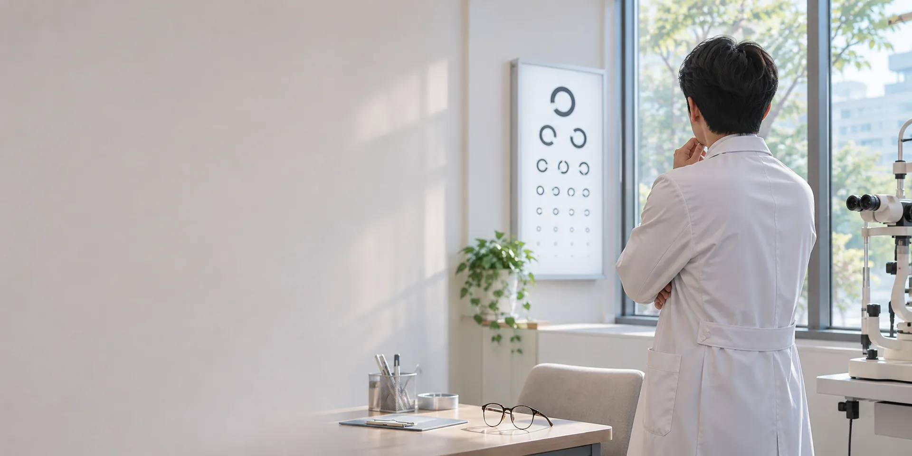
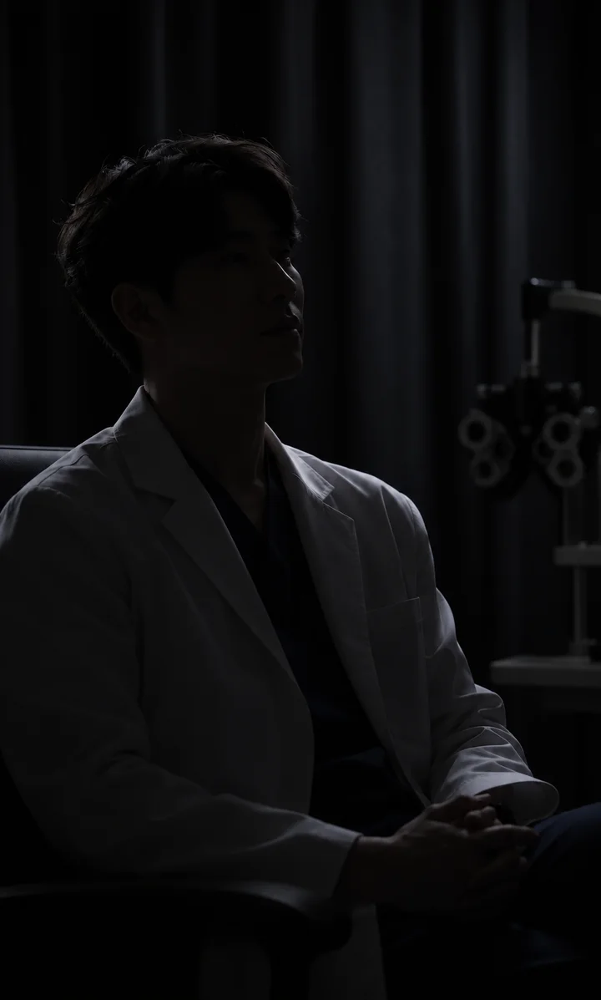
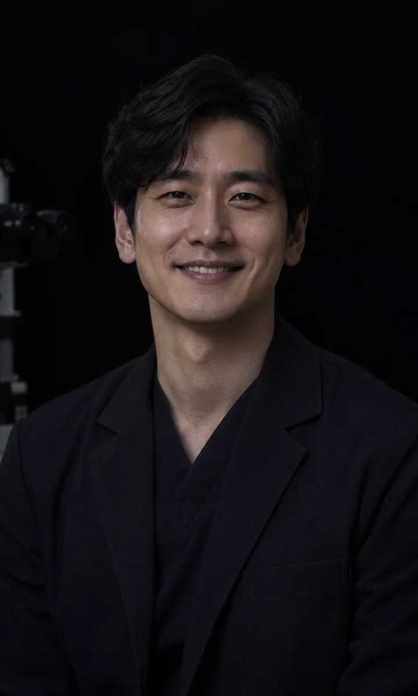
“눈, 그 이후의
삶을 생각합니다.”
개선된 시력으로 삶의 가치를 높이고
‘더 나은 삶’을 살아갈 수 있도록 돕는 것.
치료 후에도 눈 상태를 확인하는 검진이 필요합니다.
평생 ‘眼’주치의가 되는 것.
그것이 우리가 가고자하는 ‘길’입니다.
대표원장 도윤서원장 소개
대표원장도윤서
원장이선하
원장유하림
“시력교정 수술,
어떻게 하는가 만큼 누가
하느냐도 중요합니다.”
시력교정수술 3만 회 이상 집도
펨토초 레이저 백내장 수술 인증의
노안·백내장 및 시력교정수술 경력 25년 이상
렌즈삽입술 인증 전문의
- 대한안과학회 정회원
- 엑시머 레이저 시력교정 인증 전문의
- 미국 백내장 및 굴절수술학회(ASCRS) 회원
- 한국백내장굴절수술학회 정회원
- 맑은빛안과 대표원장 역임
- 現 서울시원안과 대표원장
“직접 수술받은
경험으로
환자분들의
마음까지 생각합니다.”
시력교정수술 2만 회 이상 집도
렌즈삽입술 숙련 집도의(Expert Surgeon)
시력교정수술 경력 22년 이상
각막 굴절수술 장비 인증 전문의
- 홍채고정 렌즈삽입술 우수 인증의
- 대한안과학회 정회원
- 한국콘택트렌즈연구회 정회원
- 유럽 백내장굴절수술학회(ESCRS) 회원
- 한빛대학교병원 각막·백내장 전임의 역임
- 누리대학교병원 안과 임상교수 역임
- 現 서울시원안과 원장
“환자 한 분, 한 분에게
진심과
최선을 다하는
마음으로 진료합니다.”
시력교정술 1만 5천 회 이상 집도
렌즈삽입술 우수 인증 전문의
시력교정 및 노안·백내장 수술 18년 이상
레이저 백내장 수술 우수 인증의
- 대한안과학회 정회원
- 한국백내장굴절수술학회 정회원
- 한국콘택트렌즈연구회 정회원
- 미국 백내장굴절수술학회 회원
- 새솔대학교병원 안과 임상강사 역임
- 맑은눈안과 원장 역임
- 現 서울시원안과 원장
서울시원안과 history 및 수술 종류
Our
History
안과의 중심 '시원구'에서
정상에 서기 위해
오랜시간
노력해왔습니다.
이젠 국내 정상을 넘어 세계로 초심을 간직한 체, 한 걸음 더 나아갑니다.
이젠 국내 정상을 넘어 세계로 초심을 간직한 체, 한 걸음 더 나아갑니다.
평균 25년 이상의 경력
서울시원안과는 25년 이상의
시력교정수술 경력을 가지고 있습니다.
수술 경험 90,000건 이상
서울시원안과는 90,000건
이상의 수술경험을 자랑합니다.
소개 고객 50% 이상
서울시원안과 고객의 50%
이상은 지인소개를 통해 방문합니다.
수술 만족도 99%
서울시원안과 고객들의
수술 만족도는 99%입니다.
-
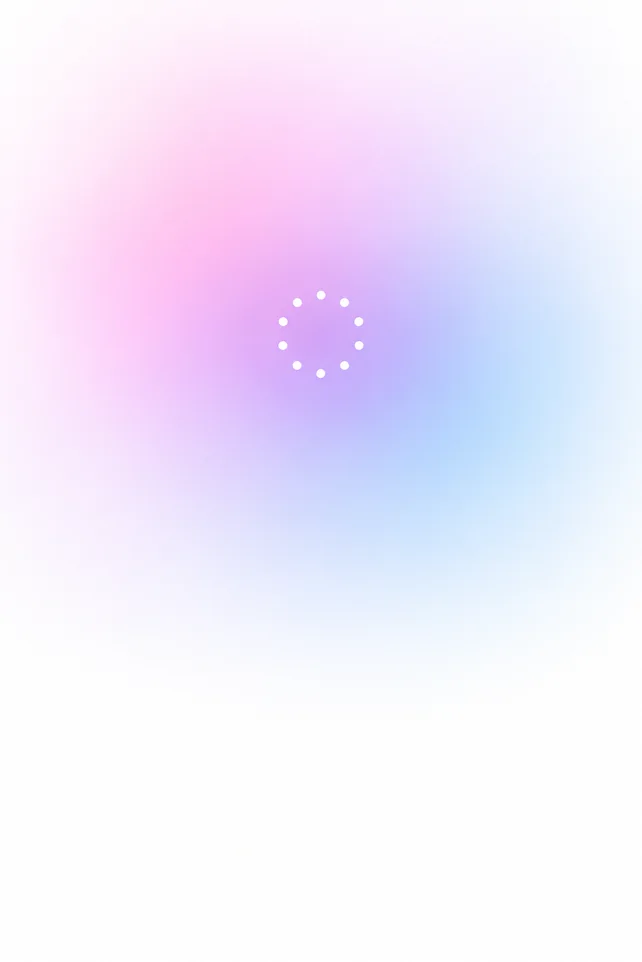
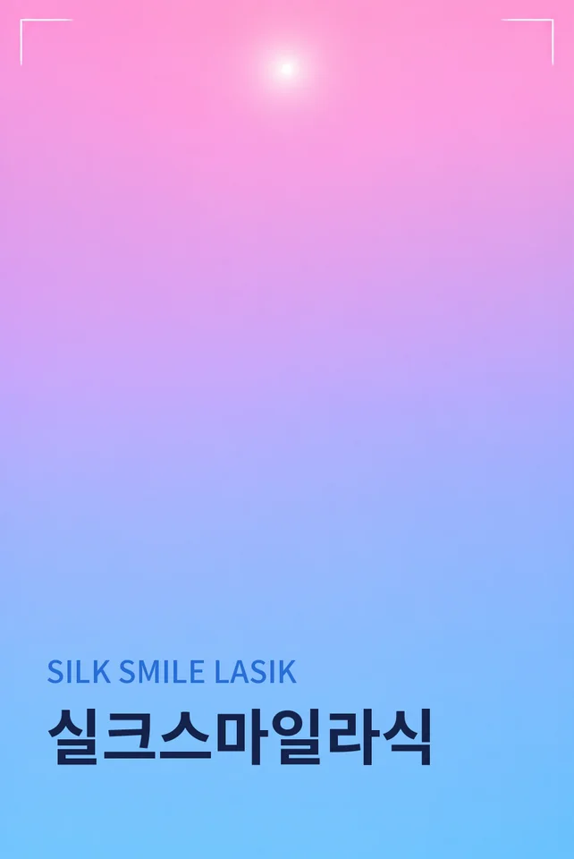
-
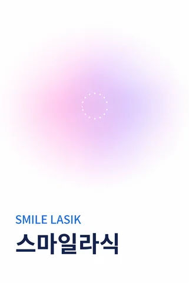
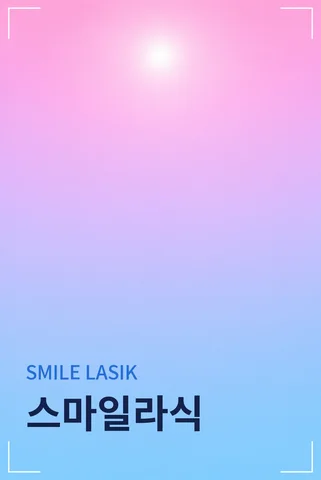
-
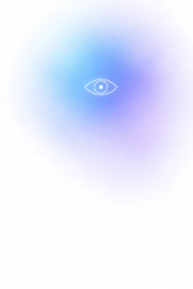
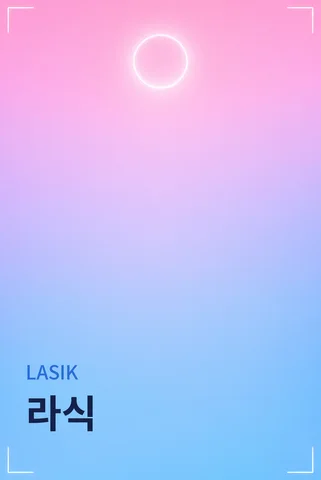
-
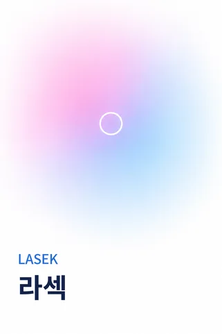
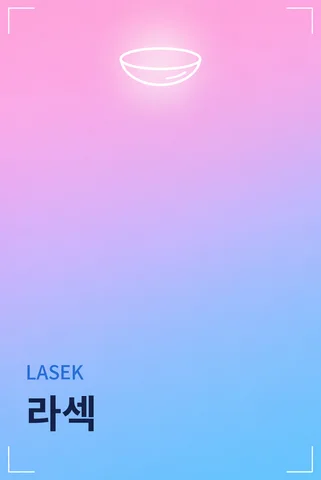
-
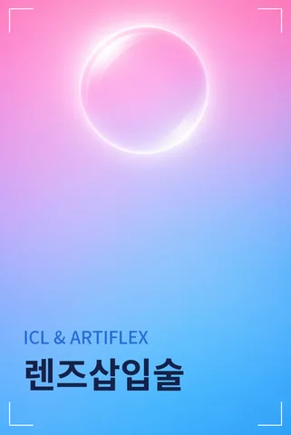
-
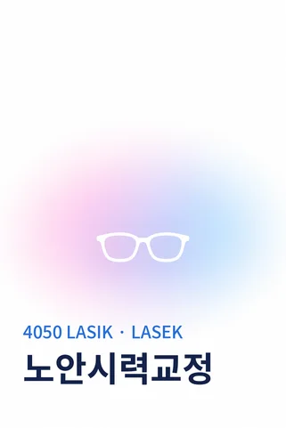
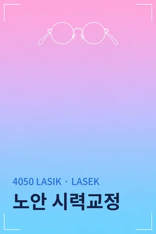
-
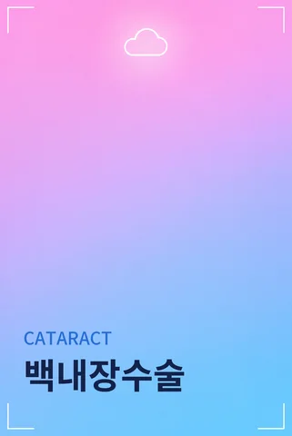
-
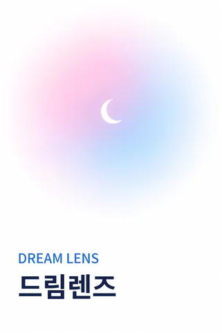
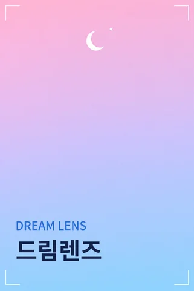
-
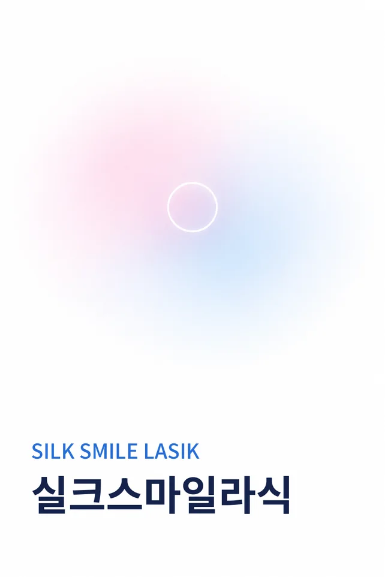
-
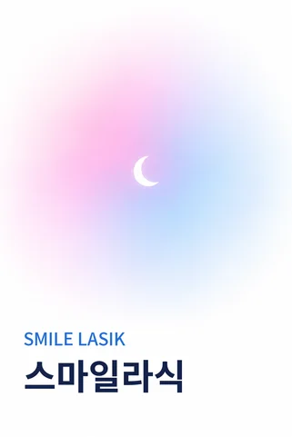
-
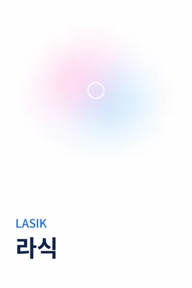
-
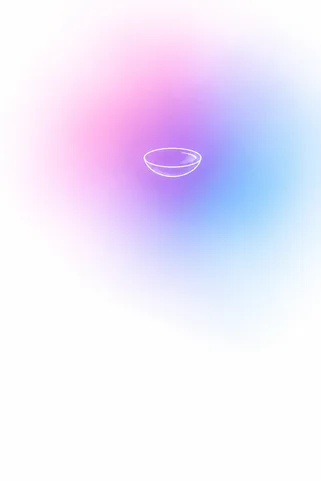
-
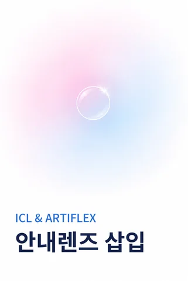
-
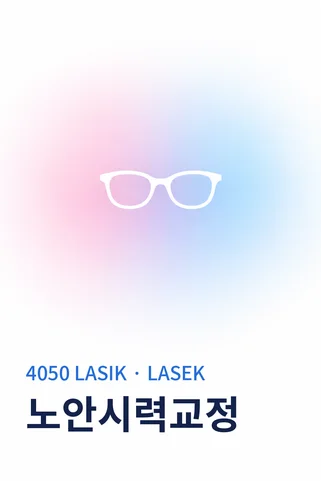
-
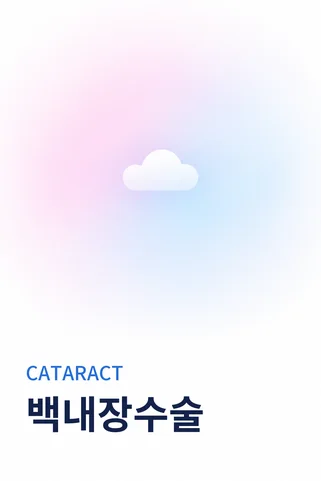
-
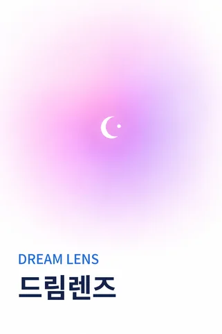
병원 소개
Play Life
서울시원안과는 시력교정 진료를 시작한 뒤로 라식·라섹 수술을 꾸준히 이어 온 안과입니다. 25년 넘게 쌓은 수술 경험과 꾸준한 공부로 검사부터 회복까지 한 분씩 꼼꼼히 살피겠습니다.
서울시원안과는 시력교정 진료를 시작한 뒤로
라식·라섹 수술을 꾸준히 이어 온 안과입니다.
25년 넘게 쌓은 수술 경험과 꾸준한 공부로
검사부터 회복까지 한 분씩 꼼꼼히 살피겠습니다.
병원 시설 소개
Eye Care
Every Day
치료와 수술에만
집중할 수 있도록
쾌적하고 편안한 느낌의
공간을 제공합니다.
-
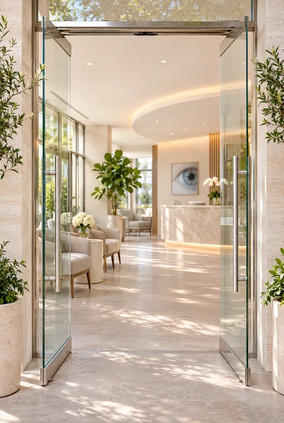
-
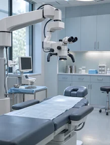
-
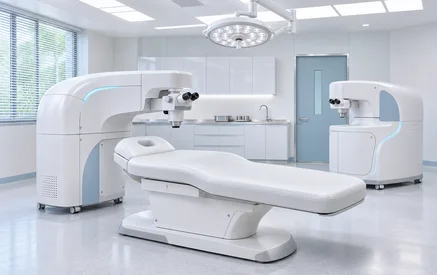
-
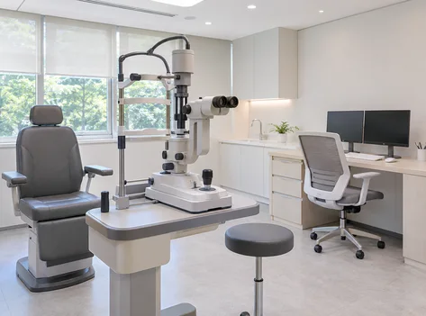
-
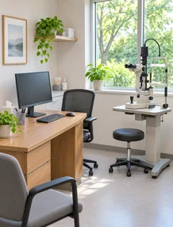
-
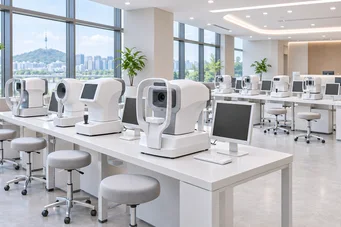
-
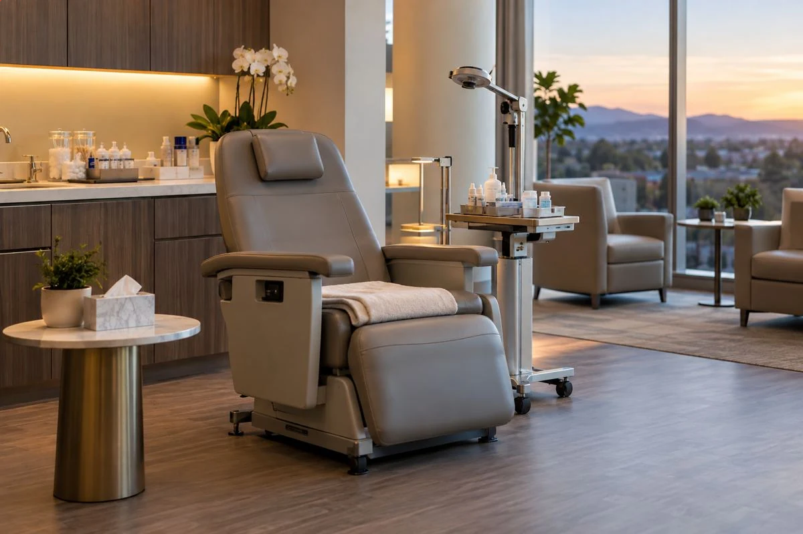
-
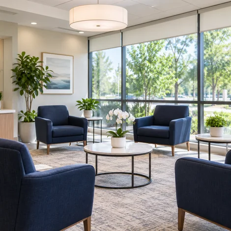